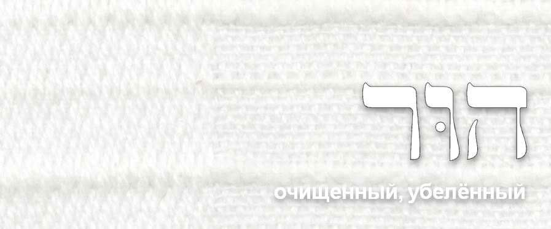
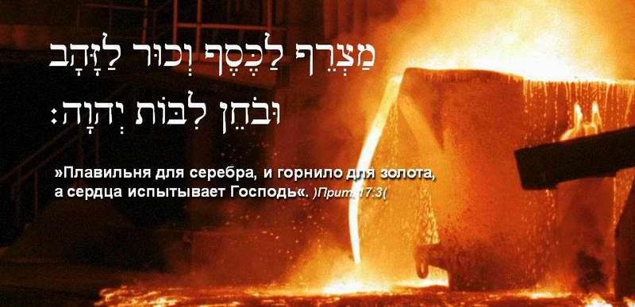

БЕЦАЛЕЛЬ / Веселеил /. Дед ХУР

ХУР - Дед Бецалеля (ивр. - Веселеил) - родоначальник династии ремесленников. Судьба стремительно вознесла его в почтенном возрасте. Соратником Моше он стал в возрасте около ста лет от роду. Мидраш сообщает - старец был родственником Моше. Мириам - родная сестра предводителя израильтян была женой Хура. Но не почести были его уделом. Он родился, чтобы претерпеть испытание.
БЕЦАЛЕЛЬ. Призвание. (часть I) БЕЦАЛЕЛЬ. Под покровом Всевышнего. (часть II) БЕЦАЛЕЛЬ. Свет Господень (часть III) БЕЦАЛЕЛЬ. Дед ХУР (часть IV) БЕЦАЛЕЛЬ. Славящий Бога (часть V)
В синодальном переводе имя Хур звучит иначе - Ор. И тех, кто хотя бы немного знают иврит, это обстоятельство сбивает с толку, так как Ор - в переводе означает свет. А мы уже говорили о том, что Свет - это имя отца Бецалеля, а не его деда.
Итак на древнееврейском языке правильно имя деда художника звучит - Хур. Имя довольно редкое и интересное по значению. Хур - в перевод означает белоснежный, очищенный (применительно к выделанной ткани). И эта белизна не изначальная, а именно достигнутая в результате тяжелого трудоемкого процесса. Этот способ выбеливания ткани по сей день практикуется в в текстильном производстве. Так что в этом плане ничего не изменилось. Вообще этот способ очищения ткани в щелочи и очищение переплавкой металлов с той же целью - очистить от шлака, от всякой примеси. Чем чище метал (серебро, золото и т.п.) тем стоимость его выше.
***
חור ХУР - ивр. Чистый
Бецалель, сын Света, первого света, имеющего чистоту и святость Творца.
Что же значит святость? Это полная принадлежность, а значит, отсутствие всяких примесей, абсолютное отделение от нечистого. Об этом говорит имя деда Бецалеля — Хур.
Хур на древнееврейском — чистый, очищенный, белый. Как написано: «Бецалель, сын Ури, сын Хура». В Писании много говорят о великой ценности чистого. С древних времен люди ценили это: чистое золото, серебро, отбеленные белоснежные ткани. Очистка металла, переплавка и отбеливание тканей — трудоемкий и длительный процесс, потому и цена их весьма высока. Бог же более всего чистого ценит чистое сердце и потому настаивает на убелении одежд души и сердца человека. Как написано в книге Притчи: «Плавильня для серебра, и горнило для золота, а сердца испытывает Господь» (Притч. 17:3). Чистота есть непременное условие предстояния пред Всевышним. Как сказано Моше у горы Синай: «Пойди к народу — и освяти его сегодня и завтра; пусть вымоют одежды свои» (Исх. 19:10). Это же требование мы слышим в повелении Всевышнего к художнику, заключенном в имени Бецалеля, сына Хура, сына чистоты и святости.

В Писании этим словом «Хур» (очищенный, белый) называется особый вид ткани, получаемый специальной выделкой и обработкой. Процесс очистки и отбеливания этой ткани, благодаря которому она получала свой ослепительно белый цвет, заключался в обработке ткани в щелочи, с последующей промывкой в чистой воде, и вновь в щелочи, и вновь в воде. И вновь в щелочи, и вновь в воде, до тех пор, пока не получали требуемого и столь ценного качества абсолютно белую чистейшую ткань. Но человек не может очистить самого себя. Он может лишь согласиться на то, чтобы это для него сделал Бог.

Как написано:«И окроплю вас чистою водою, и вы очиститесь от всех скверн ваших, и от всех идолов ваших очищу вас»(Иез. 36:25). «И введу эту третью часть в огонь, и расплавлю их, как плавят серебро, и очищу их, как очищают золото: они будут призывать имя Мое, и Я услышу их и скажу: «это Мой народ», и они скажут: «Господь — Бог мой!» (Зах. 13:9).


Этот образ, драматическую картину очищения, Бог использует неоднократно, чтобы показать суть того, что Он желает сделать в нашем сердце. Как написано: «И обращу на тебя руку Мою и, как в щелочи, очищу с тебя примесь, и отделю от тебя все свинцовое» (Ис. 1:25).

Искусство Израиля по определению должно нести в себе чистоту и святость Творца, то есть, принадлежать Ему совершенно. Разумеется, это возможно лишь в случае, когда сам художник — святой, то есть не имеет примесей в своем сердце. Лишь тогда он может называться сыном Хура, того самого, который очищен, убелен, лишен примесей, доведен до совершенства, как серебро, семь раз переплавленное.
БЕЦАЛЕЛЬ - СЫН СВЕТА. Призвание. (часть I) БЕЦАЛЕЛЬ - СЫН СВЕТА. Под покровом Всевышнего. (часть II) БЕЦАЛЕЛЬ - СЫН СВЕТА. Свет Господень (часть III) БЕЦАЛЕЛЬ - СЫН СВЕТА. Дед ХУР (часть IV) БЕЦАЛЕЛЬ - СЫН СВЕТА. Славящий Бога (часть V)
Интересна и драматична судьба Хура, деда Бецалеля. Об этом смотри мидраш "Призван быть очищенным".
Эта статья исправлена и дополнена автором.
(впервые Эфраима Калиша была опубликована на сайте skiniyadavidova.org)
автор: Эфраим Калиш /TORAART/
ЕСЛИ ЭТОТ МАТЕРИАЛ БЫЛ ВАМ ПОЛЕЗЕН, ПОЖАЛУЙСТА, ПОДЕЛИТЕСЬ ИМ С ДРУЗЬЯМИ